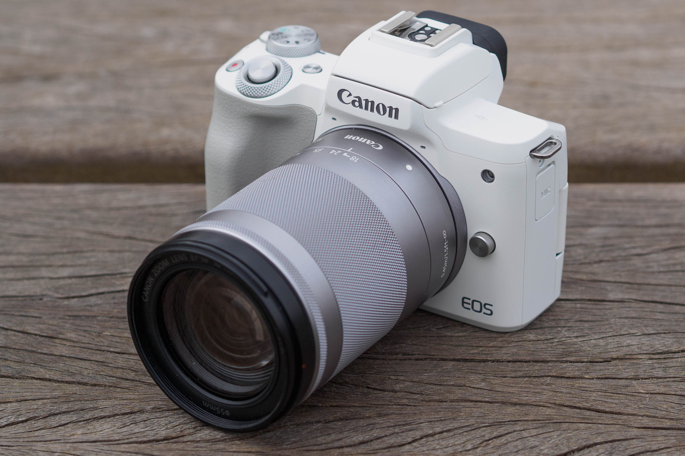

TOP 4 best mirrorless cameras by price / quality
For beginner photographers or those who do not plan to take pictures too often, it makes no sense to buy an expensive camera. It is more logical to give preference to a model which successfully combined democratic cost and acceptable quality.
Canon EOS M50 Kit
A relatively inexpensive, but fairly high-quality mirrorless camera from a well-known brand. It is equipped with interchangeable optics, with one lens provided in the kit. The device is equipped with automatic and manual white balance, built-in flash and a special function of red-eye reduction for obtaining high-quality pictures. There is no image stabilizer, but many users consider this to be just a minor flaw. The shooting speed is 10 frames per second, so the camera will successfully cope even with dynamic shooting. Additionally, the device has a timer for 2 and 10 seconds, so the device can be used for group shots. The camera has a built-in viewfinder.
- dimensions without lens 116x88x59 mm;
- weight 387 grams;
- battery capacity 235 photos.
- good autofocus;
- excellent picture quality;
- additional optics can be installed;
- comes with a lens;
- acceptable cost.
- there is no accurate display of the remaining battery capacity;
- the screen does not display information about the free space on the memory card.

Sony Alpha ILCE-7M3 Body
The cost of this mirrorless camera cannot be called low, but it is compensated by the fact that a well-known brand is engaged in the production of the device, and the technical characteristics of the device itself are very decent. This makes it suitable even for professional photographers. The model is equipped with an EXR CMOS matrix, and the maximum resolution is 6000x4000, which allows you to take high-quality pictures even in dynamics. The device also has a timer for 2, 5 and 10 seconds, and an electronic viewfinder allows you to use the camera even for people with low vision. The screen of the camera itself can also be used as a viewfinder. To get better pictures, the device provides hybrid and manual focusing, as well as focusing on the face, there is a backlight, although the device itself is supplied without a lens.
- dimensions without lens 127x96x74 mm;
- weight 650 g;
- battery capacity 710 photos.
- very high focusing speed;
- well-thought-out ergonomics of the case;
- extended dynamic range;
- high quality electronic viewfinder;
- large battery: enough for a whole day of shooting.
- the screen only rotates up and down;
- poor-quality painting of the body.
Nikon Z50 Kit
This model of a mirrorless camera successfully combines an acceptable cost and decent technical characteristics. The device itself does not come with a lens, but it can be purchased separately. It should be remembered that the highest quality images can be obtained only with "native" optics. The manufacturer has equipped the device with all the necessary functions for obtaining high-quality photos of a professional level: automatic and manual white balance, built-in flash and red-eye reduction. The shooting speed is 11 frames per second, and the timer for 2, 5, 10 and 20 seconds allows you to take group shots. The device also has a viewfinder, and the device screen itself can be used as a viewfinder. Autofocus is hybrid, although manual focus can be set if needed. The set includes a battery that has enough capacity for a whole day of shooting.
- dimensions 127x94x60 mm;
- weight 395 g;
- maximum video recording time 30 minutes.
- compact;
- convenient swivel screen;
- there is a slot for a memory card;
- excellent quality electronic viewfinder;
- automatic white balance works great.
- the battery is quickly discharged during active shooting;
- for some users, starting the camera in 1.5 seconds seems too long.

Olympus OM-D E-M10 Mark III Kit
Compact and inexpensive mirrorless camera from a renowned manufacturer of photographic equipment. One lens is provided with the device, but, if necessary, the user can purchase additional optics. The device has a high sensitivity (100-3200 ISO), and the Live MOS matrix allows you to get truly high-quality and detailed images. To keep the photos bright and clear, the manufacturer has equipped the camera with automatic white balance, built-in flash and red-eye reduction. The maximum shooting / macro speed is 8.6 frames per second, so shots in motion are not always obtained. But the camera is great for group shots, because it has a timer for 2 and 12 seconds. The turn-on time is minimal, it is only 1 second, and its compact dimensions and low weight allow you to always carry the camera with you.
- size 122x84x50 mm;
- weight 410 g;
- battery capacity 330 photos.
- simple and clear user menu;
- excellent stabilization;
- lightweight and compact body;
- suitable for shooting video in 4K format;
- fast and clear autofocus.
- protection from water is not provided;
- cannot be recharged via USB.